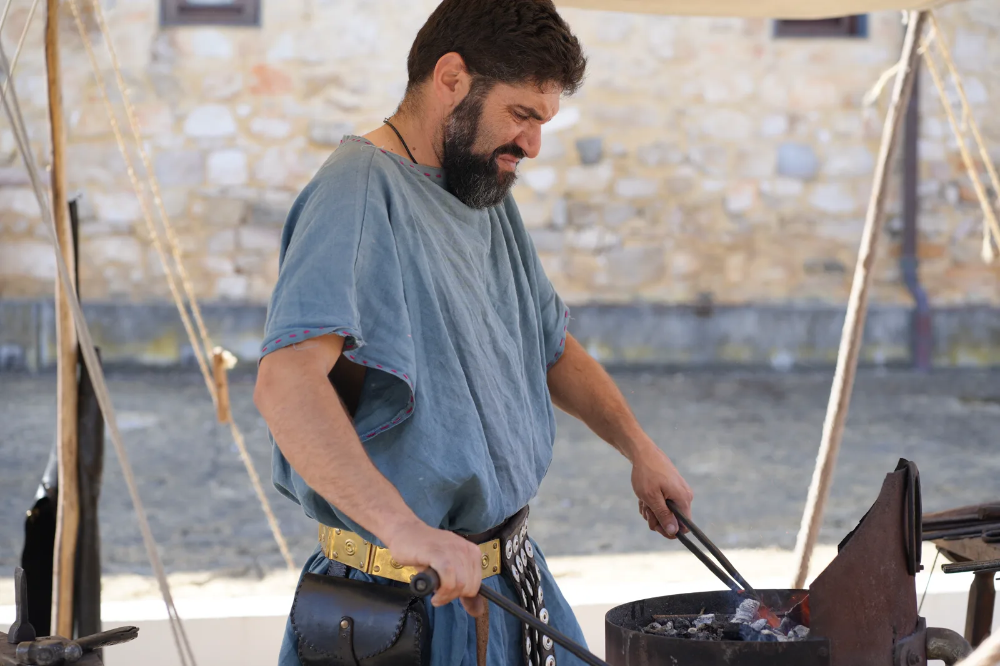
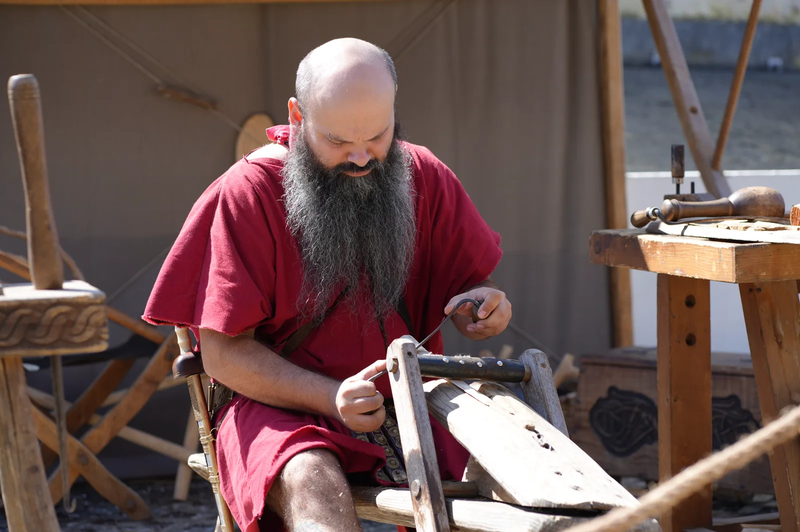
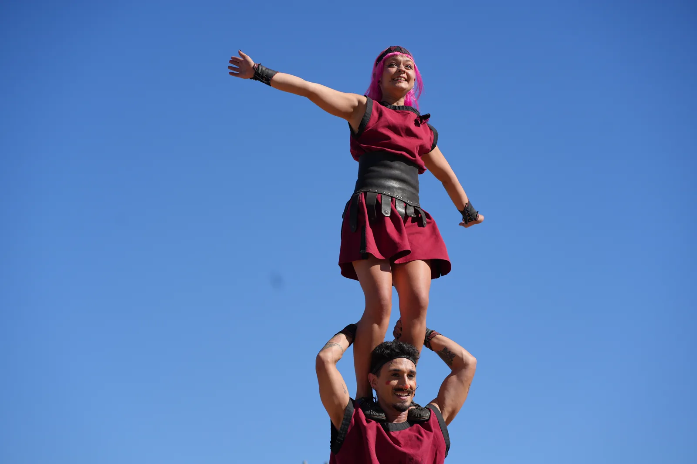
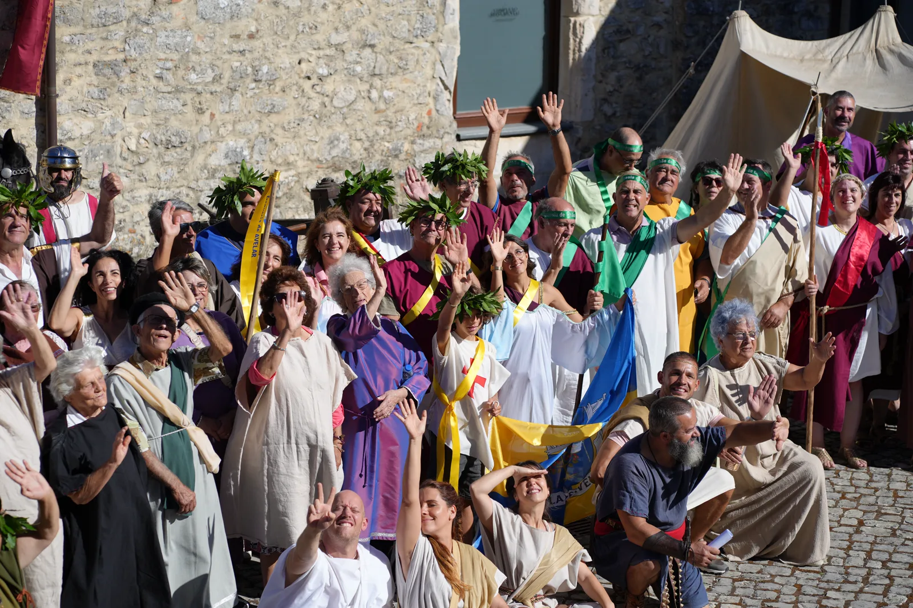
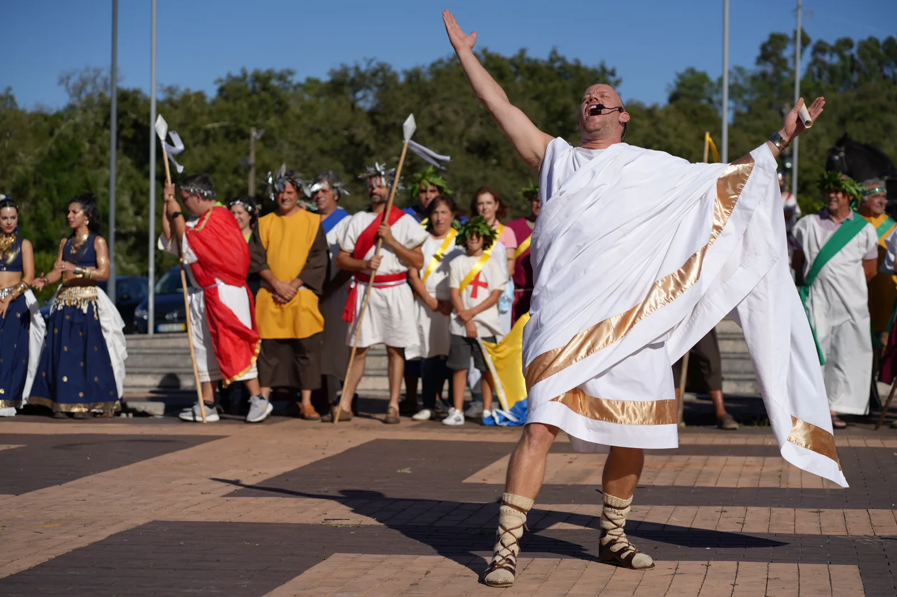
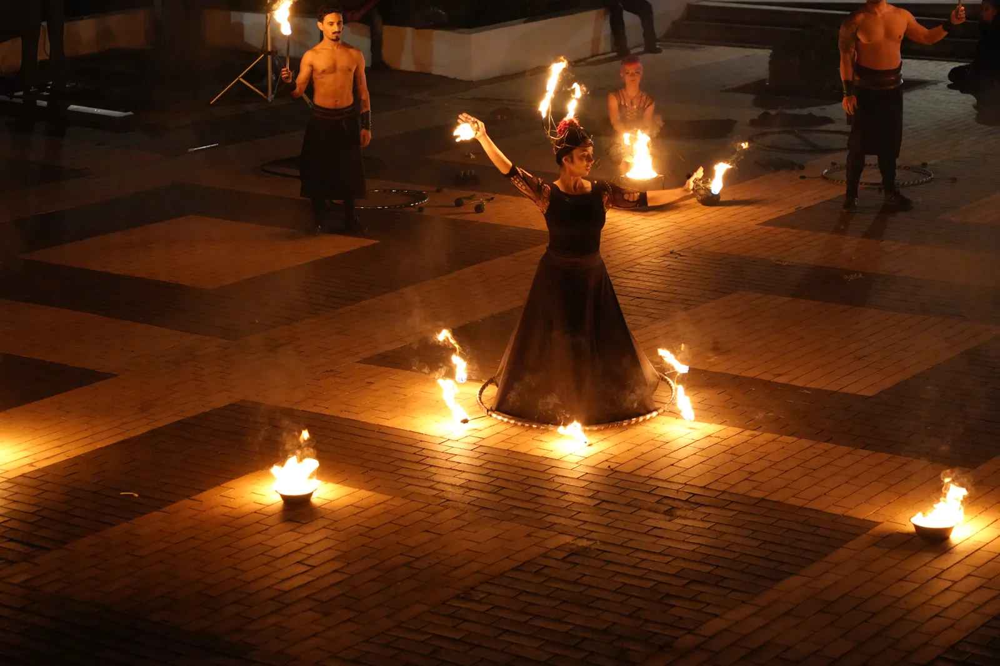
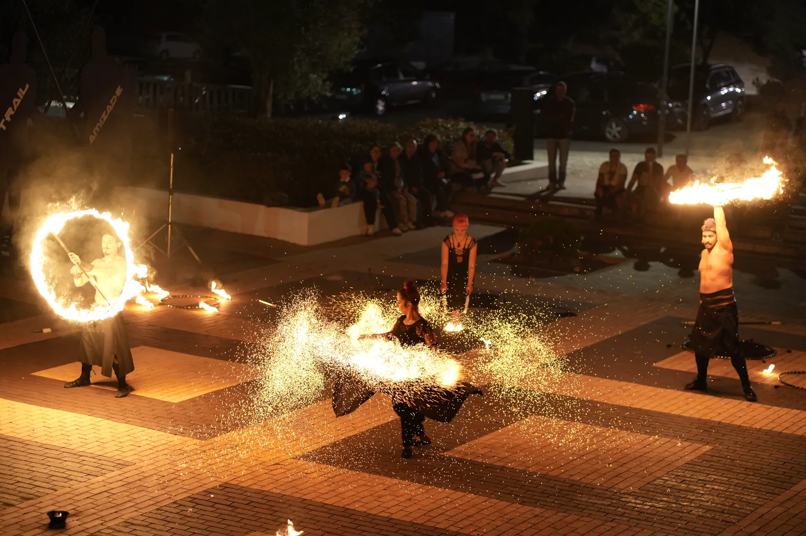
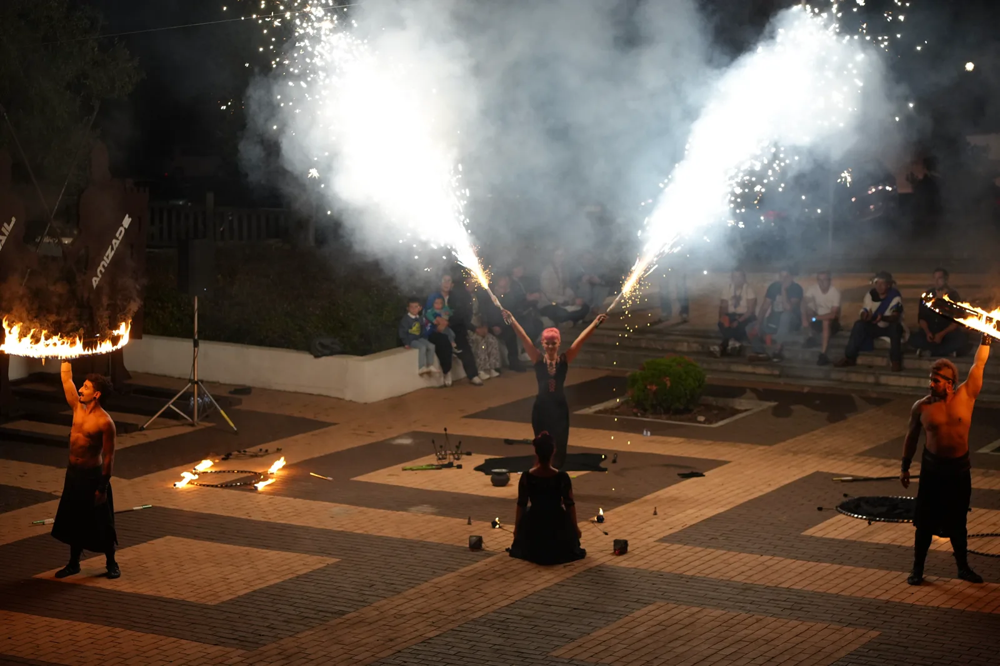

Contexto
Planos aéreos situam a Villa Romana do Rabaçal e dão escala ao recinto antes de entrarmos na ação.
Caso real · Santiago da Guarda
Dois dias de recriação histórica, comunidade e espetáculo. Uma cobertura construída para mostrar o evento por dentro e fazê-lo continuar para lá do recinto.
Dois dias · Duas peças
Da preparação diurna ao fogo da noite, cada filme acompanha um dia completo e preserva uma parte diferente da experiência.
O trabalho
O Fórum Romano vive das pessoas que lhe dão corpo: artesãos, personagens, associações, público e artistas. A cobertura combina planos aéreos, gestos próximos, retratos e espetáculo para dar escala ao evento sem perder a sua dimensão humana.
Como o construímos
Planos aéreos situam a Villa Romana do Rabaçal e dão escala ao recinto antes de entrarmos na ação.
Ofícios, trajes, animais, jogos e gestos mostram a experiência através de quem a vive e constrói.
O fogo e a noite fecham a narrativa com energia, público e uma imagem forte para continuar a comunicar o evento.
Segundo dia
O segundo filme abre espaço aos ofícios, aos jogos, ao cortejo e à comunidade que transforma a recriação histórica num acontecimento vivo.
Galeria
Uma seleção fotográfica que atravessa os dois dias, da atividade no recinto ao momento mais intenso da noite.








Dê continuidade ao evento